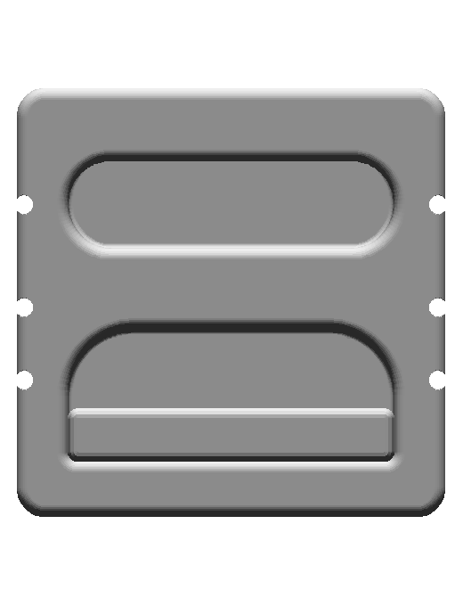
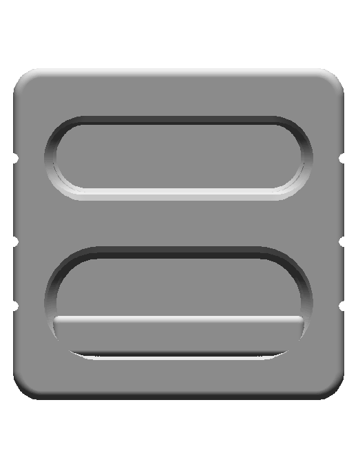
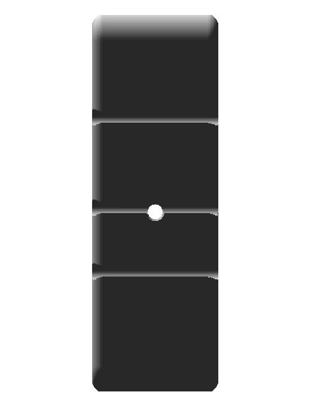
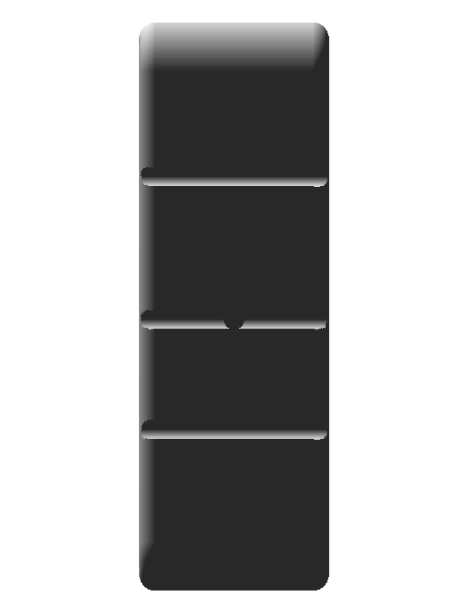

Native 105 × 105 × 35 mm body with four opposed cavities, eight selectable grip regions, adjustment grooves and a separate rounded stone insert.
Prior committed asset d0e4e95191e4a76822815bb4eeef3a32caa6fea0 and native CAD. Human app review is separate.
| Prior committed asset | Native CAD |
|---|---|
front | front |
side | side |
top | top |
The final wood solid is Port_RightVisibleMouth. The stone insert is an analytic box with a 2.4 mm native edge fillet, retained as visible geometry with no material or texture. Explicit face references on native PartDesign::SubShapeBinder objects expose the body and stone exterior shells; contact regions are open true-surface intersections. The 15/20/10/6 mm published depths remain intact, including distinct flat/incut selections. Three lateral adjustment grooves on each side are native cylindrical voids at Z 24, −2.4, −22.8 mm, radius 1.75 mm. Short radius-2 mm native lateral recesses at Y 0, Z −2.4 mm represent only the visible mouths; the inner cutoff at X ±47 mm is the display representation boundary, not evidence of a physical stopped hole. Exterior mouth planes are X ±52.5 mm with outward axes ±X. The source set does not show the concealed connection, which is therefore omitted from the cord graph. Two separately terminated visible exterior leads are generated against the native solid.